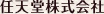
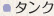

鉛筆や絵筆のタッチがとてもリアルです。

今回はわりと早めの段階で画材を「アクリル絵具」に決めました。アクリル絵具であれば、水や絵具の量などで色を変えやすく、油絵よりユーザーフレンドリー（使いやすいこと）で、初心者でもプロのような高い品質の絵を描けるんじゃないかと。 実際に描いているようなリアルな感覚をコンピュータ上で出すため、実際にアクリル絵具を購入し、ブラシごとにどのような違いが出るのか、どのくらい絵具をつけると何がどう変わるのかなどについては事前に調査・実験しました。
元々、丸筆も平筆も6本ずつあったんですよ。そんなにいっぱいあっても初心者は使えないのに（笑）。
最終的には丸筆と平筆それぞれ細、中、太の3本ずつになりました。
レッスンでも「何番の筆を使いましょう」と色々な筆の使い分けをしていて、それがレッスンの複雑化の原因でもあったんで、減らして良かったと思います。実際に画材セットを買うと、たくさん絵筆がついてくるんですが、結局お気に入りの2本しか使わなくなるものなので、これでいいんだと思います。
実は「中」もいらないんじゃない？
（笑）。
パレットで色を混ぜる部分には、どんな技術が？
コンピュータの画面で光を混ぜるのと似たような方法を使っています。光と絵具とでは、色相（色合い）が逆になるだけなんです。この方法は「サブトラクティブ・ミクシング」といいます。色の混ぜ方をわかりやすくするために「カラーサークル」というものがDSの上画面に表示されるようになっていて、作りたい色が直感的に示されるようになっています。
実際の絵画とは違う、DSならではの特徴をお教えください。
やはりまず最初に挙げられるのは、DSがポータブルな自分のアトリエになることです。学校やオフィスなど、どこにでも持ち運べます。さらに、自分専用の先生がついてくれる。この先生は自分のペースに合わせてレッスンを進めてくれます。
また、準備も一瞬でできます。実際に絵を描くとなると非常に高い画材を購入しなければなりませんが、その必要はありません。イーゼルやキャンバス、絵筆、絵具、水、パレット、モチーフなどを置けたり光の当たり具合を調整したりする場所の確保もいらない。絵を描くときは必ずと言っていいほど汚れてしまいますが、当たり前ながら絵具はつきません。片付けもDSの電源を落とすだけで終了です。
モチーフにグリッドをつけて描きやすくなっているというのもありますよね。
あれは昔の画家が木の枠とワイヤーで作ったグリッドを置いて絵を描くということを再現したものでもあります。実際にそれを準備するのは大変ですけど。とはいえ、このゲームで自信やスキルを身に付けて、もし興味が出てきたら、実際にアートの授業を受けてみて本物の絵画にふれてみるのも良いと思います。将来この『絵心教室ＤＳ』で絵を始めた人が有名なアーティストになるようなことがあれば、とてもうれしいなと思っています。
ちなみに、こういうコンピュータを使ったドロー系のツールですと、細かく作業を区切ってひとつ前の状態に戻す「アンドゥ機能」がよくついていますが、これはあえて入れなかったんでしょうか？
私たち初心者としては、普段そういう専用のツールを使わないので、必要を感じなかったというところがあります。
これについては結構いろんな話し合いを重ねました。私も彫刻をやっているときに、アンドゥがあればと思うこともあります。しかし、実際に絵を描いていると、間違ったときにすぐひとつ前の状態に戻すということはできませんよね。むしろ、失敗したところを元にして上からこういう色を乗せてみようと考えるような、そういう絵画としてのリアルさを残したいというのがありました。
といっても、アンドゥに類する機能がまったくないわけではありません。絵具を混ぜるときにどの色を使ったかわからなくなってしまうと大変なのでいったん戻せたり、作業ごとではなく前のステップやレッスンに戻って先生の説明をもう一度見て描き直すことはできるようになっています。